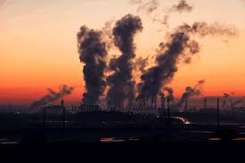
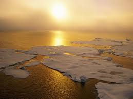

Medio Ambiente
El término medio ambiente se usa a menudo como sinónimo de hábitat, por ejemplo, cuando se dice que el ambiente natural de las jirafas es la sabana. medio ambiente es un sistema formado por elementos naturales y artificiales que están interrelacionados y que son modificados por la acción humana. Se trata del entorno que condiciona la forma de vida de la sociedad y que incluye valores naturales, sociales y culturales que existen en un lugar y momento determinado.
Contaminación del medio ambiente
Se denomina contaminación ambiental a la presencia de componentes nocivos (ya sean químicos, físicos o biológicos) en el medio ambiente (entorno natural y artificial), que supongan un perjuicio para los seres vivos que lo habitan, incluyendo a los seres humanos. La contaminación ambiental está originada principalmente por causas derivadas de la actividad humana, como la emisión a la atmósfera de gases de efecto invernadero o la explotación desmedida de los recursos naturales.

Calentamiento Global
Es uno de los efectos principales que provoca la contaminación del aire, así como la emisión de gases tóxicos en el ambiente, lo que incrementa y acelera el calentamiento natural de nuestro planeta, generando cambios en su composición, así como alteración de los ecosistemas.
